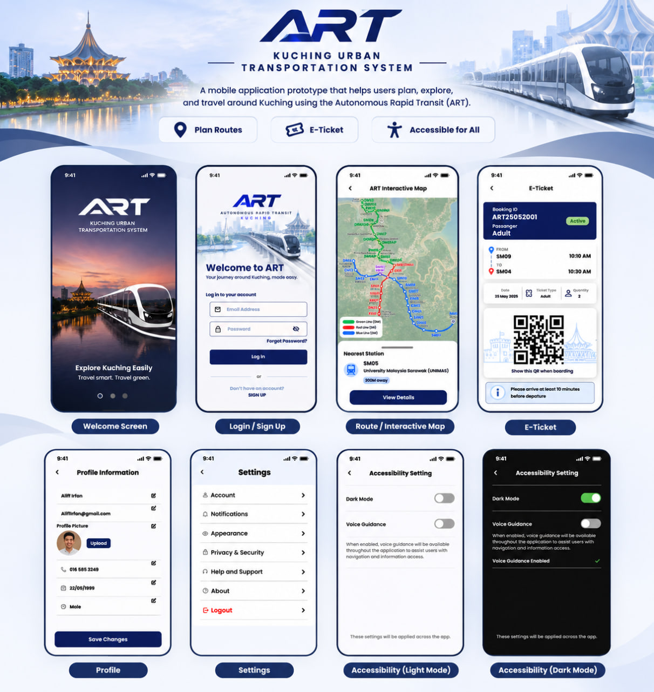
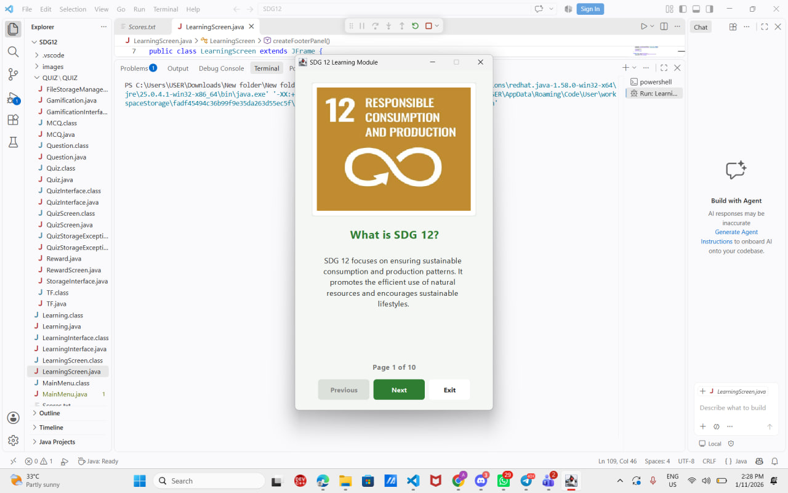
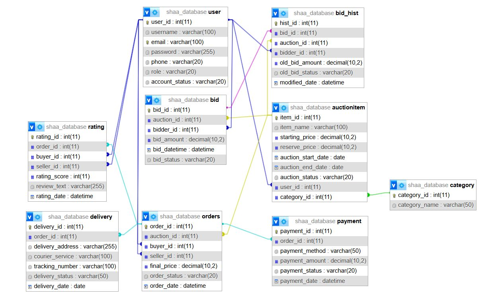
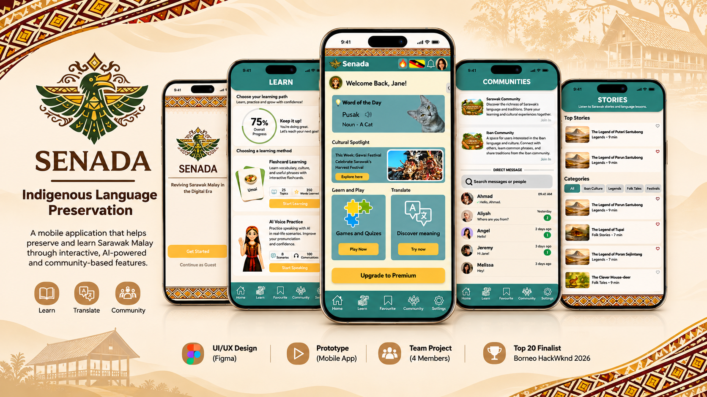
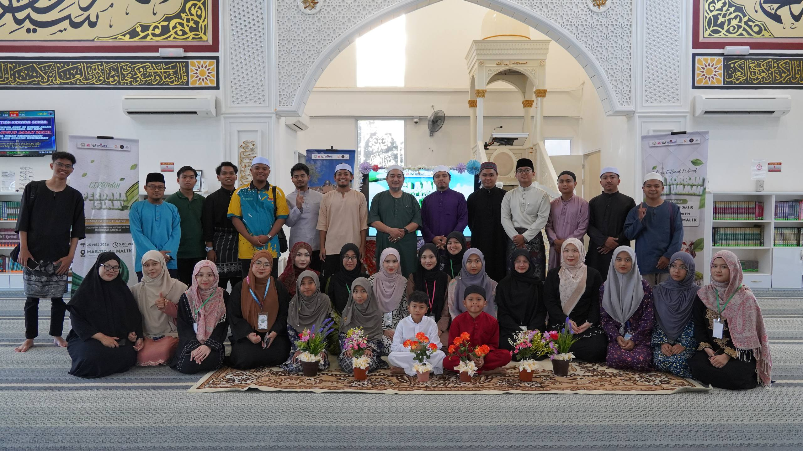

UI/UX Design
Figma, wireframing, high-fidelity prototyping, user flows, interaction design and visual hierarchy.
I enjoy exploring the connection between design and technology. From creating user-friendly interfaces to developing digital applications, I like turning ideas into something useful.
UI/UX Design • Prototyping • Programming • Creative Technology
A little introduction about myself and my interests.
I am a Multimedia Computing undergraduate at Universiti Malaysia Sarawak (UNIMAS). I have a strong interest in user interface and user experience design, especially in creating digital products that are easy and enjoyable to use.
Throughout my studies, I have gained experience in designing high-fidelity prototypes using Figma, developing applications with Java and working with relational databases using SQL.
I enjoy working with others, learning new technologies and improving my skills through academic projects and creative challenges.
Skills and tools I have developed through my studies.
Figma, wireframing, high-fidelity prototyping, user flows, interaction design and visual hierarchy.
Java, C++, object-oriented programming, event handling, application development and debugging.
SQL, MariaDB, MySQL, database management, transaction processing and testing.
Figma, Microsoft Office and digital prototyping tools.
Problem-solving, teamwork, communication, time management and project coordination.
Malay — Native proficiency. English — Working proficiency.
My academic journey.
Universiti Malaysia Sarawak (UNIMAS)
Currently pursuing a degree in Multimedia Computing, focusing on multimedia technology, UI/UX design, programming and digital application development.
SMK Simunjan No. 1, Sarawak
Completed the Malaysian Higher School Certificate, developing academic knowledge, critical thinking and independent learning skills.
SMK Sri Sadong, Sarawak
Completed secondary school education and obtained the Sijil Pelajaran Malaysia qualification.
A selection of academic and creative projects.

Designed a high-fidelity mobile application prototype for public transportation in Kuching. The design includes registration, journey planning, destination search, nearby stations, route information and ticket management.

Developed a Java Swing desktop application featuring interactive learning materials and quizzes about sustainable consumption and production across ten educational topics.

Worked with the ClassicModels database to develop and test SQL transaction scripts for order processing and inventory management. Explored transaction management, ACID properties and data consistency.

Designed a mobile application prototype to support Sarawak Malay language learning and cultural heritage preservation. The application features interactive learning, AI voice practice, translation, community interaction and cultural storytelling.

Contributed to the transportation unit for an event featuring taranum and azan competitions, helping coordinate transportation and event logistics.
Experiences that helped me grow and develop new skills.
Participated as a UI/UX Designer and team member for SENADA, a project focused on indigenous language and cultural heritage preservation. The project was selected among the Top 20 finalists.
Assisted customers, provided customer service and supported daily store operations while developing communication and teamwork skills.
Feel free to get in touch for opportunities or collaborations.